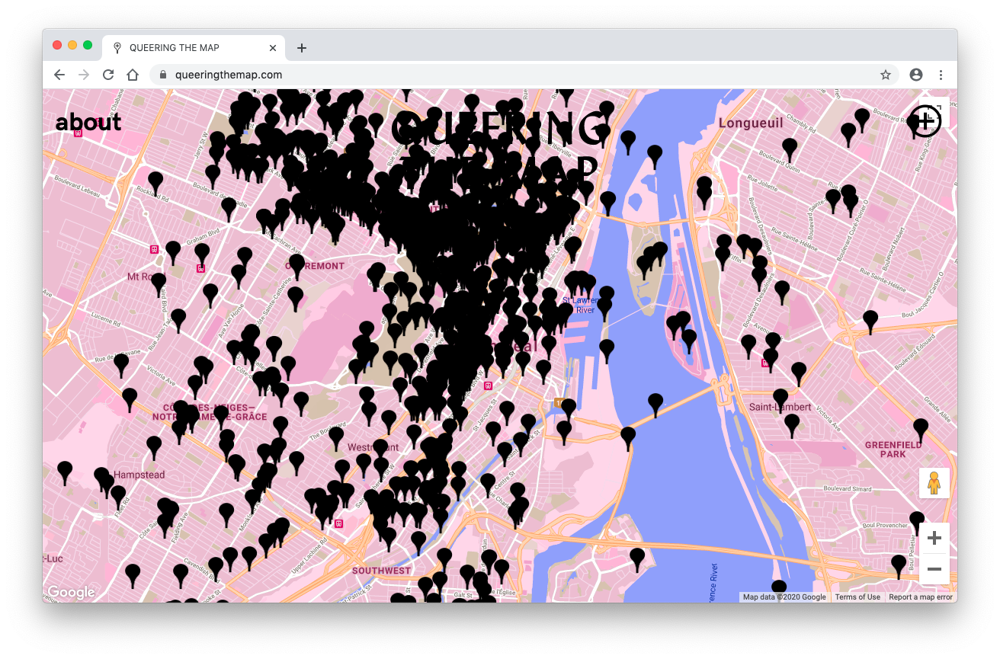

Introduction
For my final project, I am interested in this concept of creating a digital LGBTQIA+ community. LGBTQIA+ groups are often physical, where people gather and meet together in a specific place, whether it be school organizations, school clubs, or even night clubs.
One area of concern with physical LGBTQIA+ spaces is that it can be very intimidating to those who may not yet be “fully out.” Having that community and support of people who can answer questions they have regarding their own identity, who have been through the process, can provide them the support and answers they may be seeking out.
For these case studies, I analyzed two digital LGBTQIA+ centered websites/groups.
Case Study 1: Queering the Map
Queering the Map is an interesting website that is very simple, easily navigable, and encourages user interaction and participation. It has a clear and straightforward goal: of visualizing, mapping, and recording LGBTQIA+ experiences. It has such a powerful message when you zoom out of the map, and get bombared with the amount of LGBTQIA+ stories that already exist within the scale of a city, a county, a state, a country, a continent, and a whole world. It visibilizes and centers the narratives of a group that is not often represented on popular forms of media.
Reading through the stories that are close proximities to them reminds them of their own personal and memorable moments they have been through. They are able to empathize with other anonymous user-submitted stories, partly due to their own shared LGBTQIA+ identity. This sense of connection empowers and encourages the user, finally motivating them to submit and contribute their own personal story to the map.
It is such a fun site to use. No two stories are exactly the same. The stories submitted have such a wide variety: some are short, concise events, some are long, vivid, and very personal events. At the basics of it, it is just a map with “pins” with their own narratives and stories, and are anonymous, but are still able to be very impactful. Even though these user-submitted stories are anonymous - faceless map pin-points - Queering the Map still manages to create a connection with the user.
Case Study 2: Queer Asian Intersections
Queer Asian Intersections (QuAInt) has a very similar goal and intended user base as the Queering the Map website, but it removes this sense of anonimity, since that user profiles are tied to their Facebook accounts. Additionally, the content within the website has a lot more variation of content, ranging from memes, discussions, and personal stories.
Note: Identifiable information has been blurred out in the following images for privacy.
For me personally, I got involved with the group by chance, when one of my friends who are already in the group invited me to join it. A lot of the group members already have at least someone they know and are Facebook friends within the group, and invite people they are friends with to the group. This is one potential barrier for people who may not have a Facebook account, have a friend (who identifies as Asian and LGBTQIA+) to be already a part of the group, and also for those who may not be out. Even though it has a lot of engagement from users, if they have barriers in accessing these resources, then it may potentially be missing and overlooking a part of the LGBTQIA+ who are closeted.
Overall, it’s a relatively active community. It has not been as popular and active since it was created, but a few posts here and there still get a lot of engagement. I overall, it’s a very welcoming and interesting Facebook group to be a part of, and for me personally, I am more drawn towards reading and learning about other people’s stories.